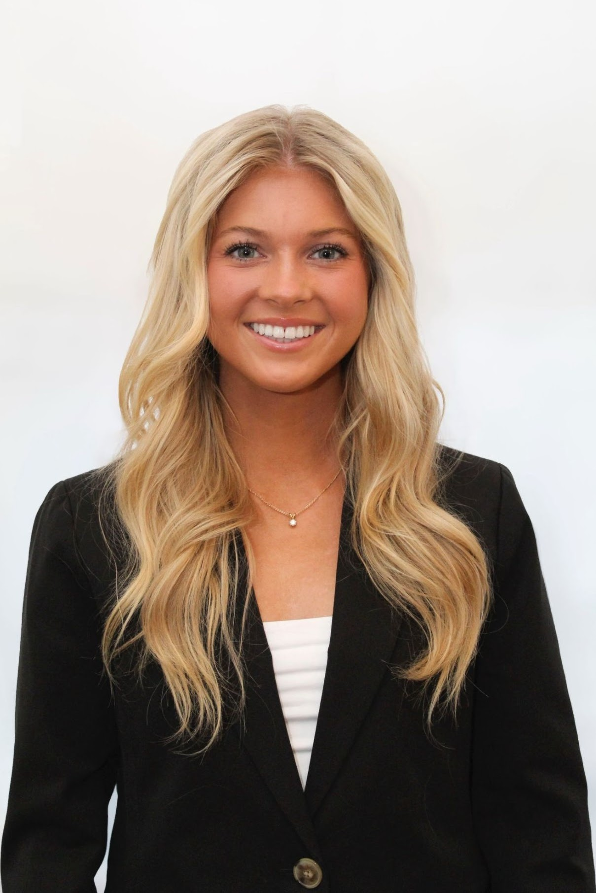

Journalist
Pitch, write, and post original content to the WJLA website, about 3-7 articles per day. Topics include crime, politics, sports, and uplifting stories. My best work was when I pitched an idea, and it turned into the lead broadcast story for the 5 p.m. news.
Create film during team practices, games and training days. Edit footage using Catapult and send it out to the coaches. Operate DSLR broadcast cameras on foot and mounted above the field. Adjust lighting, white balance, filters and view of the players.
Wrote about all news topics in College Park, MD. Scheduled and completed interviews with community members, politicians and celebrities. Use of AP style and submissions on tight deadlines.
Set up the award show, present awards, handle check-ins and break down the award show. Network with experienced, Emmy-nominated journalists throughout the DMV.